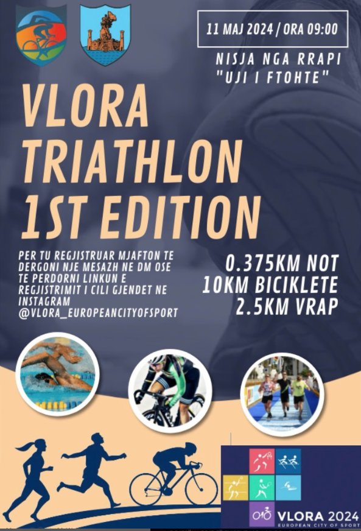
The TEA Digital Calendar heads to Vlora, European City of Sport, for the first ever Vlora Triathlon on May 11, swimming, cycling, and running along the Ionian. Starting from Rrapi near the “Cold Water,” it’s a weekend invitation to sports fans to enjoy the action and the sea breeze.
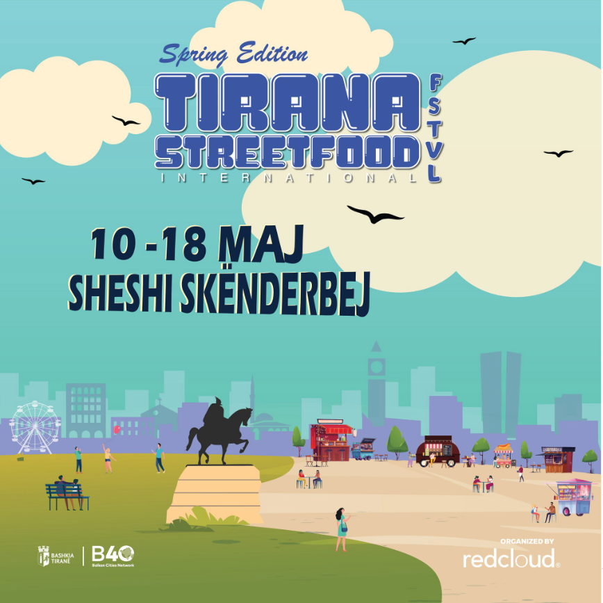
The TEA Digital Calendar presents the 4th “Tirana Street Food” Festival, turning Skënderbej Square into a culinary hub from May 10–18. Enjoy traditional Albanian flavors, international dishes from local chefs, and a lively atmosphere filled with music and fun.
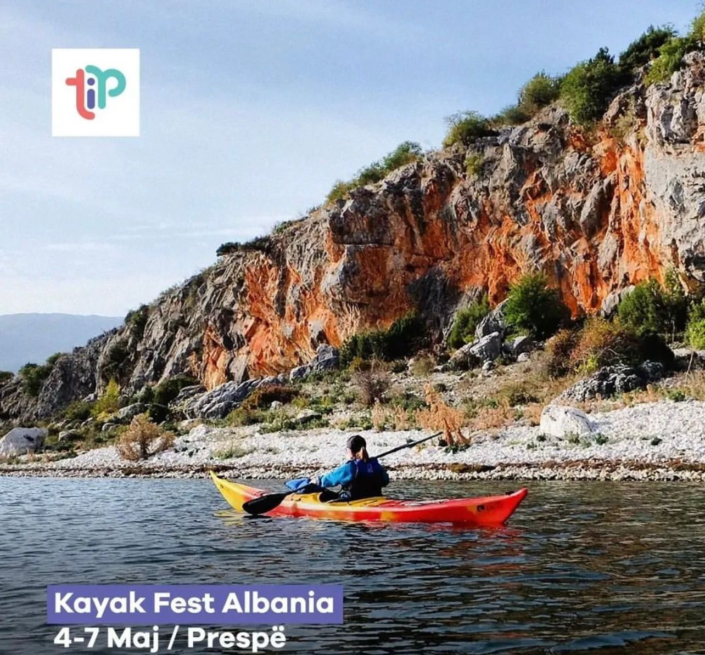
The TEA Digital Calendar brings “Kayak Fest Albania 2024” to Lake Prespa, May 4–6 at Zaroshkë beach and May 7 in Pustec. Enjoy camping, competitions, kayak tours, music by the lake, kids’ lessons, and local food as the tourist season kicks off in this stunning setting.
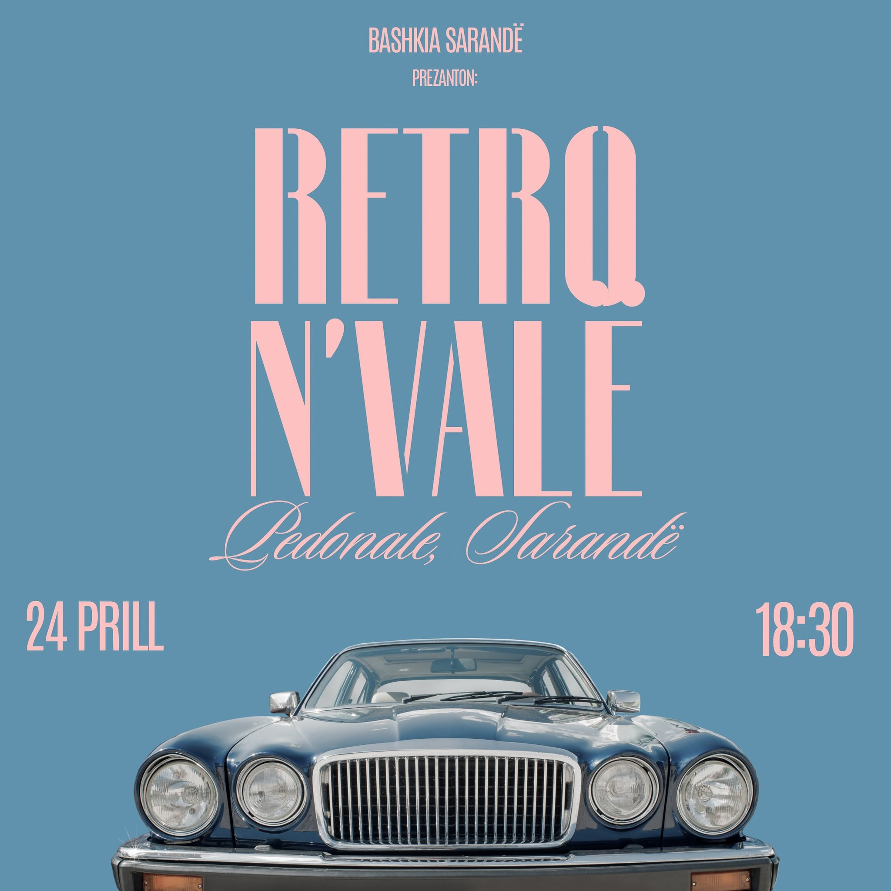
The TEA Calendar brings a Retro Car Parade to Saranda’s promenade on April 24, filling the seaside with vintage cars and motorcycles, “Old School” music, and stories from passionate owners. Celebrate classic motoring and seaside charm as the tourist season begins.
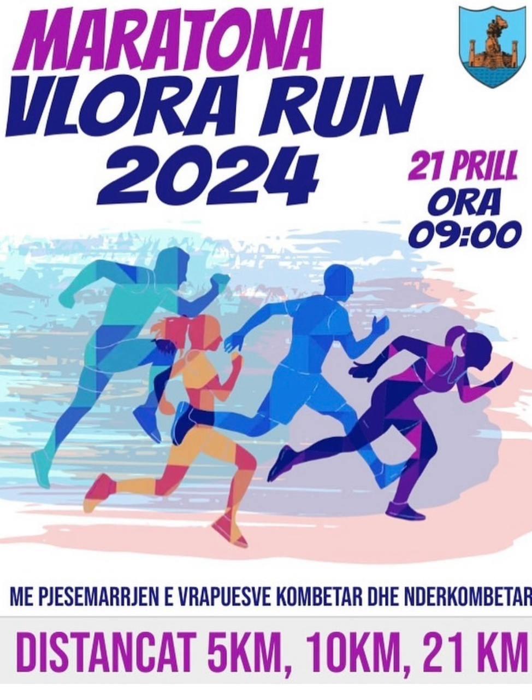
The annual “Vlora Run” returns on April 21 as part of Vlora’s “European City of Sports” year, gathering runners from Albania, the Balkans, and beyond. Race along the bay, compete for prizes, and enjoy the coastal sights featured in the TEA National Tourism Calendar.
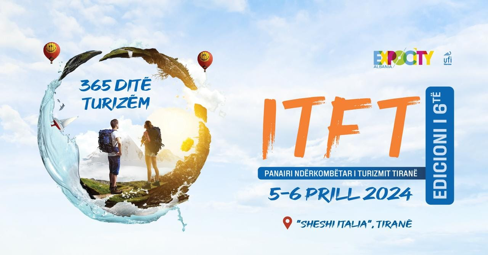
Albania Tourism Week returns to Tirana, April 5–9, launching with the International Tourism Fair (ITFT 2024) near Italia Square on April 5–6 and culminating with the 70th UNWTO Europe Commission meeting. Expect B2B sessions with global buyers, industry innovations, and showcases of Albania’s destinations highlighted by the TEA National Tourism Calendar.
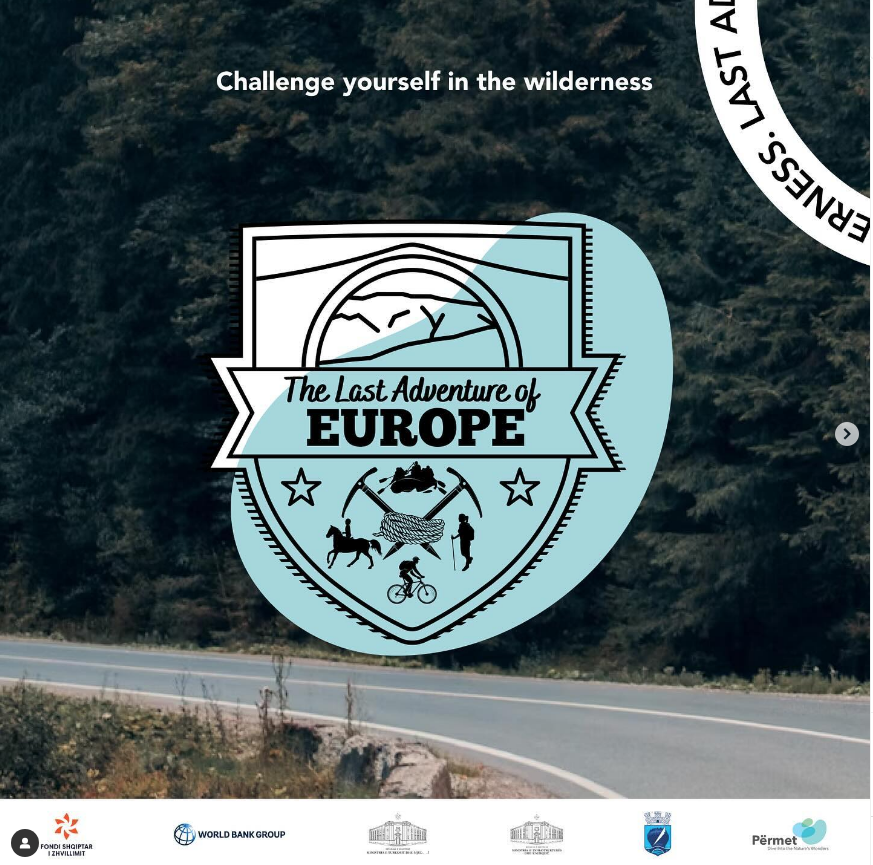
"The Last Adventure of Europe" is an outdoor festival in Përmet, Albania, March 22–24, celebrating nature, adventure, and community. Activities include hiking, rock climbing, rafting, kayaking, camping, and kids' programs. The festival integrates local culture, emphasizes sustainability, promotes healthy living, and features educational workshops and live music, supporting Përmet's environmental conservation and local initiatives through responsible tourism.
The International Opera Vocal Festival “Marie Kraja” celebrates 22 years at the National Theatre of Opera and Ballet on March 27–29. An international jury of opera leaders judges young lyric singers (20–34) over three nights, broadcast live on Top Channel, showcasing emerging talent alongside the National Theatre’s Symphony Orchestra and promoting Albania’s cultural image worldwide.
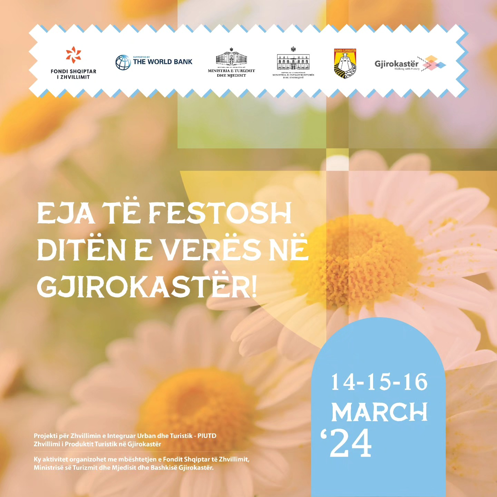
The “Walking With History” festival brings three festive nights to Gjirokastra on March 14–16, featuring traditional and modern music, art exhibitions, handicrafts, and local culinary heritage. The celebrations in “Çerciz Topulli” Square include performances by Elhaida Dani and Young Zerka, offering visitors an authentic cultural experience in the stone city.
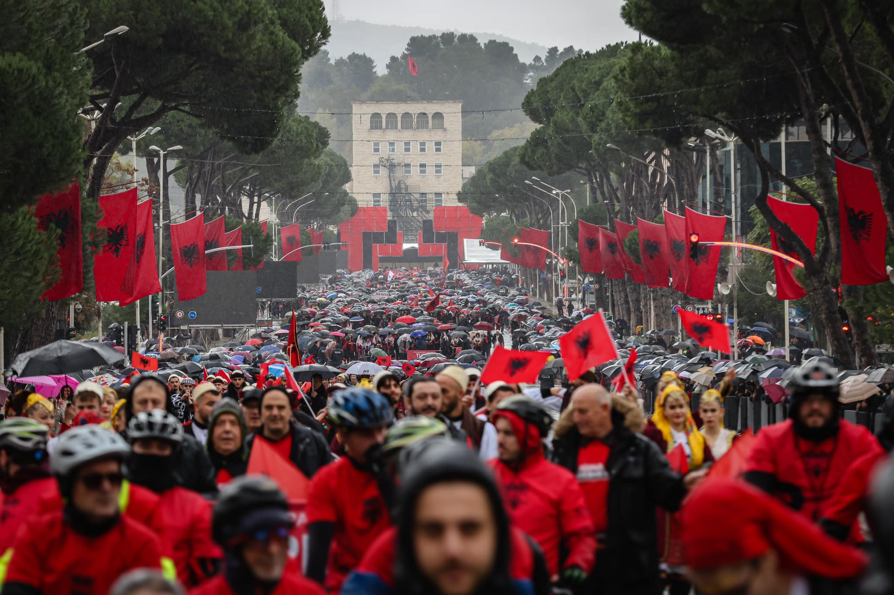
On November 28, Tirana will host the first “Parade of Albanians” in celebration of the 111th Anniversary of National Independence. Organized by the diaspora group “Albanian Roots” with the Municipality of Tirana, the parade will begin in “Mother Teresa” Square, bringing together thousands of Albanians from all Albanian lands and the Arbëresh diaspora. Participants will march with red and black flags along the “Deshmoret e Kombit” boulevard toward Skanderbeg Square, where the national flag will be ceremonially raised. Over 125 municipalities from Albanian communities worldwide are expected to join this symbolic celebration.image.png
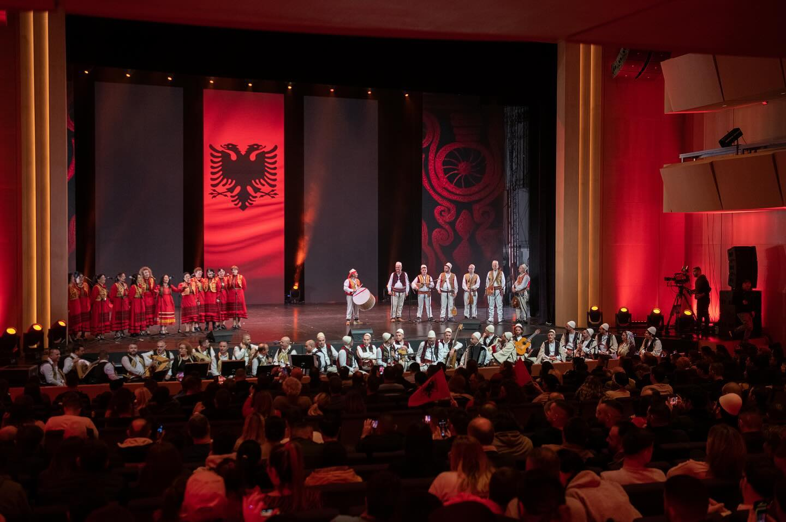
On November 28, Tirana will host a major folkloric celebration featuring the finest ensembles from the Nationwide Folklore Festival of Gjirokastra. Groups such as the Albanian Folk Song and Dance Ensemble, Kosovo’s “Shota,” the North Macedonian Ensemble, Montenegro’s “Rapsha,” and the Arbëresh “Shqiponja” will perform traditional songs and dances in honor of Albania’s Independence and Flag Day. “Folk Fest 2025” will unite Albanians from all regions and the Arbëresh community in an evening dedicated to national identity, enriched by the music and rhythms of Albanian and Arbëresh folklore as part of the National Tourism Events Calendar and TEA App.
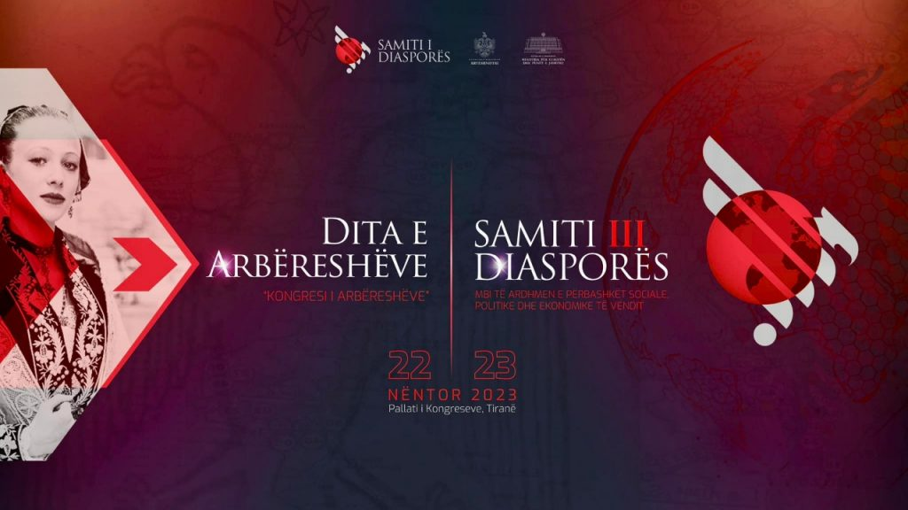
The Diaspora Summit and Arbëresh Congress mark a historic gathering that celebrates Albanian heritage and strengthens ties between Albanians worldwide. The event unites diaspora communities to discuss key areas such as education, healthcare, business, art, and culture, emphasizing the diaspora’s role as a vital national asset. Serving as a platform for collaboration and exchange of ideas, the summit promotes cultural identity, preserves traditions and language, and honors the global achievements of Albanians. It aims to foster solidarity and inspire concrete projects for a brighter future for Albanians everywhere.